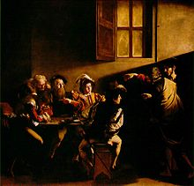
Картина Караваджо Призвание апостола Матфея
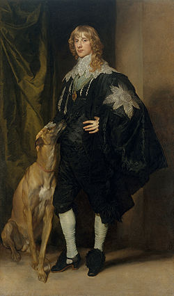
Антонис ван Дейк. Портрет Джеймса Стюарта
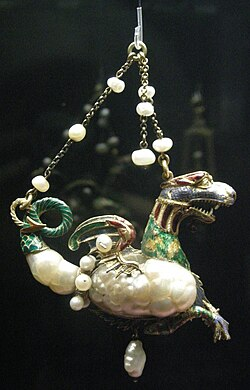
Барочная жемчужина в подвеске XVII века
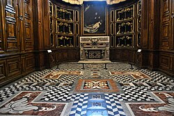
Интерьер церкви Чертоза-ди-Сан-Марино

Церковь
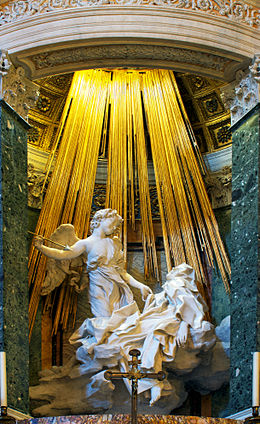
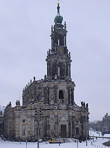
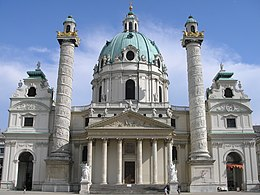

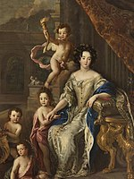

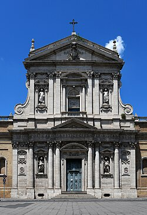
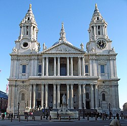
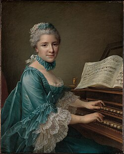
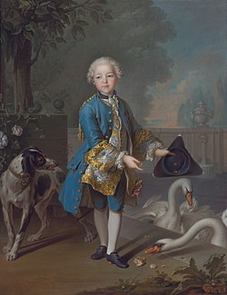
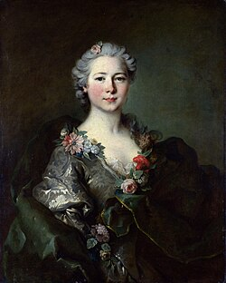
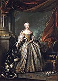
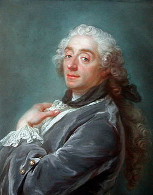
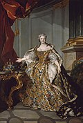
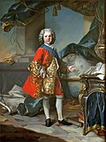
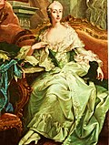
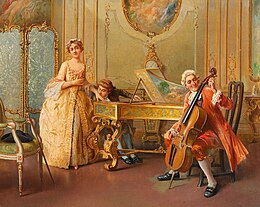
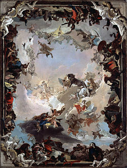
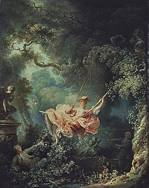
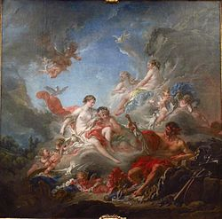
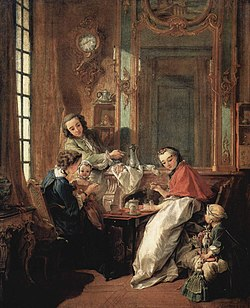
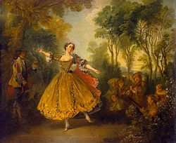
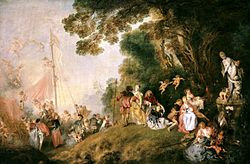
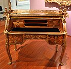
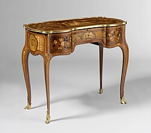
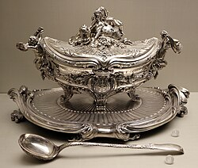
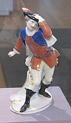
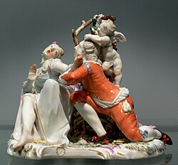
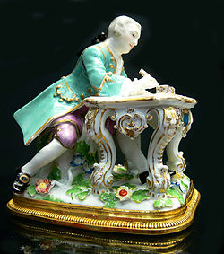
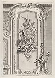
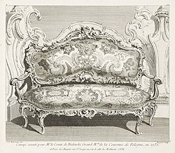
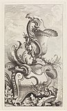
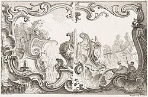
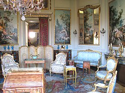
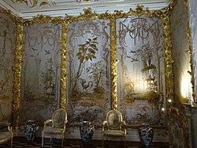
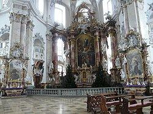
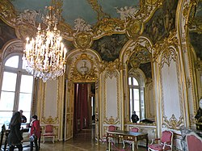
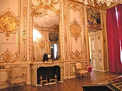
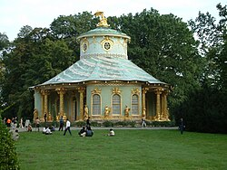
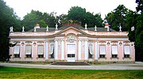
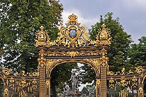
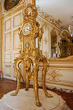
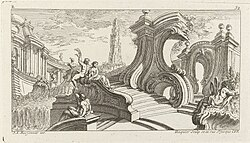
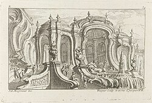
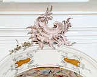
Рокайль Аббатской церкви Аморбах, Бавария
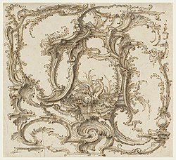
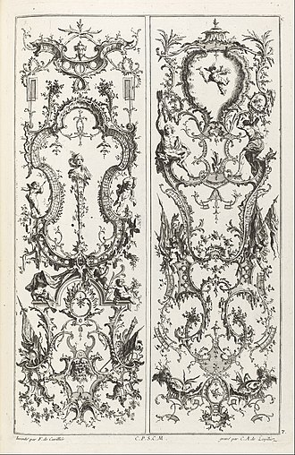
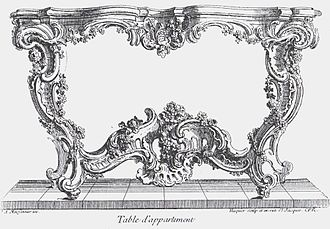
Жюст-Орель Мейсонье, гравированный дизайн приставного столика, около 1730 года, гравюра"